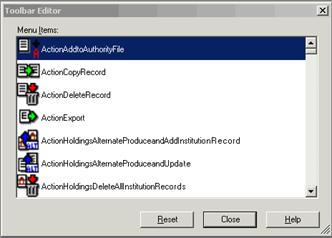

Tools>Toolbar Editor
Add, delete, and rearrange buttons from the default client toolbar.
Menu items are in alphabetical order and match the categories from the main OCLC menu: Action, Authorities, Batch, Cataloging, Edit, File, Help, Tools, View, and Window.
To add icon to toolbar:
Open the Toolbar Editor window (Tools > Toolbar Editor)

Scroll the Menu Items list. When you find a button you want to add, click and hold it, and then drag and drop it where you want it to appear on the toolbar.
The image of the button also remains in the Toolbar Editor list, but you cannot add the button to the toolbar again.
When finished, click Close, or press <Enter>.
To remove icon from toolbar:
Open the Toolbar Editor window (Tools > Toolbar Editor).
Click the button you want to remove and hold it, and then drag and drop it into the Toolbar Editor Menu Items list.
When finished, click Close, or press <Enter>.